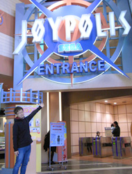
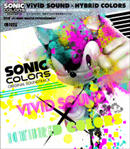

東京ジョイポリス正面入り口
今年はソニック生誕20周年の記念すべき年ということで、ソニック関連の様々な企画が東京ジョイポリスでも展開されていく予定なのですが、その手始めに、「ソニック カラーズ」のサウンドトラックが館内BGMとして使用されています！
宇宙のテーマパークを舞台に繰り広げられる作品のために作られたの音楽が、実在するリアルなテーマパーク＝ジョイポリスの館内で使用されたらどんな感じなのか？？これはチェックしないわけにはいかない！
ということで2月某日、大谷自ら現地に行って参りました。
そもそもの発端は、2011年の1月初旬、プロモーション担当の者から私への問合せでした。昨年末より「ソニック カラーズ」のサントラを東京ジョイポリスの館内BGMとして使用していて、施設スタッフからの評判も良く、お客様からBGMへの問い合わせも多いので、サントラの商品情報をメインモニタに表示することを検討しているから、その為のテキスト情報や画像を用意してもらえないか？とのこと。
え？そんな展開してたの！
『ソニックカラーズ』オリジナルサウンドトラック
と、ひとまず驚きまして、飯塚プロデューサーに確認したところ、「ソニック20周年活動の一環として、カラーズのサントラ流してもらってます。」との回答が。もう少し詳細を知りたい！ということでプロモーション担当の者に聞いてみると、『ソニック カラーズ オリジナルサウンドトラック ヴィヴィッド・サウンド × ハイブリッド・カラーズ』のDisc-1のみをオープンからクローズの１時間前まで繰り返し再生してくれているとのこと。
うーむ、なるほど……
もちろん、それだけでも十分に嬉しい話だし、僕らの作ったゲーム音楽が、ゲームとはまた別の形で何かのお役に立てるのであれば、これほど嬉しいことはありません！でも……欲を言えば……欲を言えばなぁ～。
サントラは3枚組なので "Disc-1" だけじゃなくて、全部使ってもらえたら嬉しいんだけどなぁ～。
たぶん機材とかオペレーションの都合とか色々あって1枚のCDにしたいんだろうなあ……あと、曲間の尺ももっと短い方がいいんだろうなぁ……なんて事を考えていたのですが、
それならば！
3枚のディスクから、館内BGMに適した楽曲のみを抜粋してメドレー編集した専用ディスクを用意すればいいんじゃない？
各エリアの曲を中心に選曲して凝縮すれば、もっとメリハリがついて様々なアトラクションを巡っている感じも出ると思うし……
と、提案してみたところ、「お願いできるなら是非！」との快い返事を頂き、さっそく、選曲＆編集作業にとりかかりました。